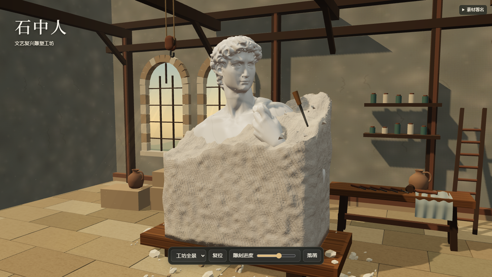

把想法做成三维现场。
给 Codex 一段描述、一张参考图，或一份带尺寸的草图。用这个 Skill 做出能旋转视角、操作物件的 Three.js 场景，带走离线网页和可修改的源码。

空间与风景
从按图还原的室内，到由文字构建的江南渡口。
案例研究
从眼球的光路到发动机的点火顺序，看看其他作者怎样用三维交互讲清内部结构与运动。
给 Codex 一段描述、一张参考图，或一份带尺寸的草图。用这个 Skill 做出能旋转视角、操作物件的 Three.js 场景，带走离线网页和可修改的源码。

从按图还原的室内，到由文字构建的江南渡口。
从眼球的光路到发动机的点火顺序，看看其他作者怎样用三维交互讲清内部结构与运动。